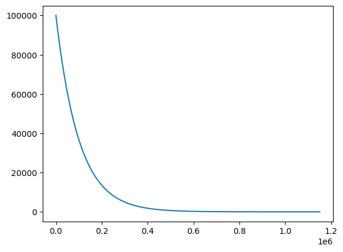

Napier’s Logarithms: 九九のない世界#
R=5のときのNapierの対数を計算する#
Naperはこの数列を技巧を凝らして計算したが、単純に計算すると膨大な計算量となるため、まず \(R=5\) の場合を計算する。
\[\begin{split}
\begin{eqnarray}
p_{0} &=& 10^5 = 100000 \\
p_{1} &=& 10^5 \left(1-\frac{1}{10^5} \right)= 100000 \times 0.99999 = 99999 \\
p_{n+1} &=& p_{n} \left(1-\frac{1}{10^5}\right) = p_{n} \times 0.99999
\end{eqnarray}
\end{split}\]
底の変換によって、\(R=7\) の場合を効率よく近似できるため、これらの計算は無駄にならない:
\[
\log_{1-10^{-5}} \frac{N}{10^5} = \frac{\log_{1-10^{-7}}\frac{N}{10^5}}{\log_{1-10^{-7}}(1-10^{-5})} \approx \frac{1}{100}\log_{1-10^{-7}}\frac{N}{10^5} = \frac{1}{100} L(N \times 100)
\]
import math
import numpy as np
math.log(1-10**-5, 1-10**-7)
100.00049505548901
関数を繰り返し適用する (数列の値を次々に求める) Python関数を定義する:
def nest_list(f, x, c=1):
while True:
yield x
x = f(x)
if x < c:
break
yield x
10**5, 1-10**(-5)
(100000, 0.99999)
nest_list(lambda l: l*(1-10**(-5)), 10**5, 1)
<generator object nest_list at 0x7c57150d7920>
n = nest_list(lambda l: l*(1-10**(-5)), 10**5, 1)
for _ in range(10):
print('{:5.0f}'.format(next(n)))
100000
99999
99998
99997
99996
99995
99994
99993
99992
99991
Note
\(10000 \times 0.99999 \times 0.99999 \times \cdots\)の値が\(1\)以下になるまで\(0.99999\)の乗算を繰り返してリストに格納する。リストの添字がNapierの対数になる
napier5=np.array(list(nest_list(lambda l: l*(1-10**(-5)), 10**5, 1)))
napier5.size, napier5[-1]
(1151288, 0.9999979002909413)
napier5[0:100]
array([100000. , 99999. , 99998.00001 , 99997.00003 ,
99996.00006 , 99995.0001 , 99994.00015 , 99993.00021 ,
99992.00027999, 99991.00035999, 99990.00044999, 99989.00054998,
99988.00065998, 99987.00077997, 99986.00090996, 99985.00104995,
99984.00119994, 99983.00135993, 99982.00152992, 99981.0017099 ,
99980.00189989, 99979.00209987, 99978.00230985, 99977.00252982,
99976.0027598 , 99975.00299977, 99974.00324974, 99973.00350971,
99972.00377967, 99971.00405963, 99970.00434959, 99969.00464955,
99968.0049595 , 99967.00527945, 99966.0056094 , 99965.00594935,
99964.00629929, 99963.00665922, 99962.00702916, 99961.00740909,
99960.00779901, 99959.00819893, 99958.00860885, 99957.00902877,
99956.00945868, 99955.00989858, 99954.01034848, 99953.01080838,
99952.01127827, 99951.01175816, 99950.01224804, 99949.01274792,
99948.01325779, 99947.01377766, 99946.01430752, 99945.01484738,
99944.01539723, 99943.01595707, 99942.01652692, 99941.01710675,
99940.01769658, 99939.0182964 , 99938.01890622, 99937.01952603,
99936.02015583, 99935.02079563, 99934.02144543, 99933.02210521,
99932.02277499, 99931.02345476, 99930.02414453, 99929.02484429,
99928.02555404, 99927.02627378, 99926.02700352, 99925.02774325,
99924.02849297, 99923.02925269, 99922.03002239, 99921.03080209,
99920.03159179, 99919.03239147, 99918.03320115, 99917.03402081,
99916.03485047, 99915.03569013, 99914.03653977, 99913.0373994 ,
99912.03826903, 99911.03914865, 99910.04003825, 99909.04093785,
99908.04184745, 99907.04276703, 99906.0436966 , 99905.04463616,
99904.04558572, 99903.04654526, 99902.04751479, 99901.04849432])
napier5[-100:]
array([1.00098839, 1.00097838, 1.00096837, 1.00095836, 1.00094835,
1.00093834, 1.00092834, 1.00091833, 1.00090832, 1.00089831,
1.0008883 , 1.00087829, 1.00086828, 1.00085827, 1.00084826,
1.00083826, 1.00082825, 1.00081824, 1.00080823, 1.00079822,
1.00078821, 1.00077821, 1.0007682 , 1.00075819, 1.00074818,
1.00073818, 1.00072817, 1.00071816, 1.00070815, 1.00069815,
1.00068814, 1.00067813, 1.00066813, 1.00065812, 1.00064811,
1.00063811, 1.0006281 , 1.00061809, 1.00060809, 1.00059808,
1.00058808, 1.00057807, 1.00056806, 1.00055806, 1.00054805,
1.00053805, 1.00052804, 1.00051804, 1.00050803, 1.00049803,
1.00048802, 1.00047802, 1.00046801, 1.00045801, 1.000448 ,
1.000438 , 1.00042799, 1.00041799, 1.00040799, 1.00039798,
1.00038798, 1.00037797, 1.00036797, 1.00035797, 1.00034796,
1.00033796, 1.00032796, 1.00031795, 1.00030795, 1.00029795,
1.00028794, 1.00027794, 1.00026794, 1.00025793, 1.00024793,
1.00023793, 1.00022793, 1.00021793, 1.00020792, 1.00019792,
1.00018792, 1.00017792, 1.00016792, 1.00015791, 1.00014791,
1.00013791, 1.00012791, 1.00011791, 1.00010791, 1.00009791,
1.0000879 , 1.0000779 , 1.0000679 , 1.0000579 , 1.0000479 ,
1.0000379 , 1.0000279 , 1.0000179 , 1.0000079 , 0.9999979 ])
import matplotlib.pyplot as plt
x = np.linspace(0,napier5.size,num=napier5.size)
plt.plot(x,napier5)
[<matplotlib.lines.Line2D at 0x7c57141e0290>]

九九のない世界#
上で求めた配列 napier5 を検索し、対数を求める: \(n = \log_{1-10^{-5}}(p_{n})\)
napier5[0], napier5[-1]
(100000.0, 0.9999979002909413)
np.searchsorted?
Signature: np.searchsorted(a, v, side='left', sorter=None)
Call signature: np.searchsorted(*args, **kwargs)
Type: _ArrayFunctionDispatcher
String form: <function searchsorted at 0x7c5731596700>
File: /opt/conda/lib/python3.11/site-packages/numpy/core/fromnumeric.py
Docstring:
Find indices where elements should be inserted to maintain order.
Find the indices into a sorted array `a` such that, if the
corresponding elements in `v` were inserted before the indices, the
order of `a` would be preserved.
Assuming that `a` is sorted:
====== ============================
`side` returned index `i` satisfies
====== ============================
left ``a[i-1] < v <= a[i]``
right ``a[i-1] <= v < a[i]``
====== ============================
Parameters
----------
a : 1-D array_like
Input array. If `sorter` is None, then it must be sorted in
ascending order, otherwise `sorter` must be an array of indices
that sort it.
v : array_like
Values to insert into `a`.
side : {'left', 'right'}, optional
If 'left', the index of the first suitable location found is given.
If 'right', return the last such index. If there is no suitable
index, return either 0 or N (where N is the length of `a`).
sorter : 1-D array_like, optional
Optional array of integer indices that sort array a into ascending
order. They are typically the result of argsort.
.. versionadded:: 1.7.0
Returns
-------
indices : int or array of ints
Array of insertion points with the same shape as `v`,
or an integer if `v` is a scalar.
See Also
--------
sort : Return a sorted copy of an array.
histogram : Produce histogram from 1-D data.
Notes
-----
Binary search is used to find the required insertion points.
As of NumPy 1.4.0 `searchsorted` works with real/complex arrays containing
`nan` values. The enhanced sort order is documented in `sort`.
This function uses the same algorithm as the builtin python `bisect.bisect_left`
(``side='left'``) and `bisect.bisect_right` (``side='right'``) functions,
which is also vectorized in the `v` argument.
Examples
--------
>>> np.searchsorted([1,2,3,4,5], 3)
2
>>> np.searchsorted([1,2,3,4,5], 3, side='right')
3
>>> np.searchsorted([1,2,3,4,5], [-10, 10, 2, 3])
array([0, 5, 1, 2])
Class docstring:
Class to wrap functions with checks for __array_function__ overrides.
All arguments are required, and can only be passed by position.
Parameters
----------
dispatcher : function or None
The dispatcher function that returns a single sequence-like object
of all arguments relevant. It must have the same signature (except
the default values) as the actual implementation.
If ``None``, this is a ``like=`` dispatcher and the
``_ArrayFunctionDispatcher`` must be called with ``like`` as the
first (additional and positional) argument.
implementation : function
Function that implements the operation on NumPy arrays without
overrides. Arguments passed calling the ``_ArrayFunctionDispatcher``
will be forwarded to this (and the ``dispatcher``) as if using
``*args, **kwargs``.
Attributes
----------
_implementation : function
The original implementation passed in.
Note
与えられた数の対数は、リストの数値の内でその数に最も近い値を取る数の添字
def n_log(x):
if x < napier5[0] and x > napier5[-1]:
return np.searchsorted(-napier5, -x)
else:
raise IndexError
n_log(1234), n_log(5678)
(439489, 286856)
napier5[439489], napier5[286856]
(1233.9966508401064, 5677.981745569941)
sum((439489, 286856))
726345
napier5[726345] * 10**5
7006610.457565
1234*5678
7006652
def n_times(x, y):
return napier5[n_log(x)+n_log(y)] * 10**5
n_times(1234, 5678)
7006610.457565